Plant dyeing is my day job, but I don't often get to play with the dyes. I took some time off to shake things up and just have fun. I got inspired after a Dyeing with Plants workshop I taught. I saw my students experience the magic of modifiers, and I felt an urge to try out some patterns myself. I recorded the process and am sharing my top pattern-painting tips.
All you need to start is some plant-dyed fabric, iron crystals (or rusty pieces), white vinegar (or another acid), and a brush. If you need tips for dyeing fabric with plants, go to my plant dyeing directory. If you don't have any previous experience dyeing with plants, I would suggest starting as easy as dipping cotton fabric in black tea.
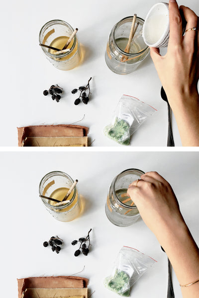
Making iron water
Plant dyes react with a range of different modifiers. One of them is iron, known for “saddening” or darkening the color. You can either make iron water yourself or use iron crystals (I purchase them online).
If you want to make iron water at home, collect rusty nails and pieces, and cover them with white vinegar. Close the lid and let the solution develop for at least two weeks, or until you see the color change. The longer you wait, the stronger the solution.
If you're using iron crystals, you can make the solution whenever you need. The right concentration is 1–2%, which means for every 100 g of fabric you'd take 1–2 g of iron crystals. If you don't have a scale, start with the tip of a spoon. Iron is relatively heavy.
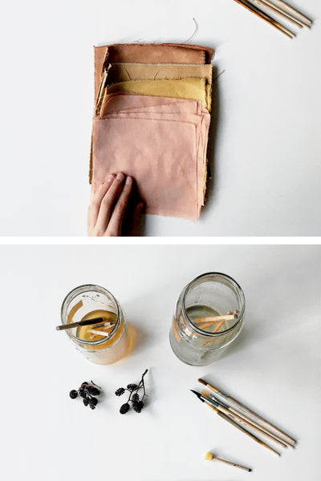
White vinegar solution
I used this acidic solution as a discharging agent. The acid discharges the iron that connected with the dyes and washes it off. I use it to make negative-space patterns. Acid breaks the fiber–pigment–metal bond and reverses the reaction.
I used white vinegar diluted with water, but you can use other acids as well, for example citric acid crystals or lemon juice. Make sure the pH is 3–4. You can buy pH strips at any pharmacy, or just test the solution and adjust if needed.
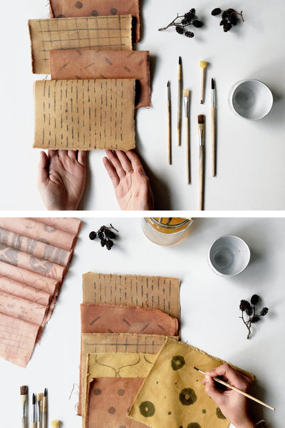
Choosing the right dye plant
Not every plant dye reacts with every modifier. Some dyes are pH-sensitive and will change color when painted with, or dipped in, an acidic or alkaline solution. Some examples are mahonia berries, red cabbage, or black hollyhock (all not lightfast).
Plant dyes that change color when modified with iron are tannin-rich dyes. Tannins are compounds produced by some plants that help them protect themselves from predators and might help regulate growth. Tannin-rich dyes include oak galls, alder cones, tea, and many others.
In this tutorial I am using three dye plants:
- goldenrod (orange-yellow)
- oak galls (brown-beige)
- a mix of the two above plus madder root (burnt orange)
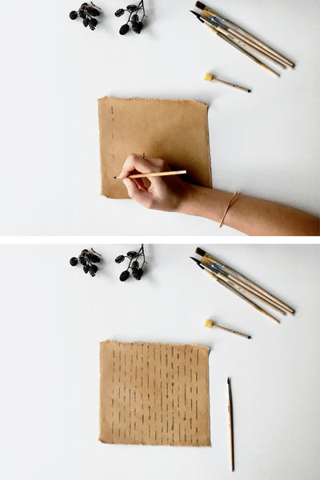
Lightweight vs. heavy fabric
I let all my pieces dry before I started painting, but if you don't care about clear patterns, you can paint on damp cloths.
Lightweight fabrics will take up the iron water faster and more easily, which means you have to be careful with every brush stroke. My main advice: take less iron water on your brush than necessary. You can always add more, but you can't take it back.
Heavy fabric, like the cotton canvas I'm using, doesn't take up much dye at the beginning, so it might be difficult to paint on. It needs multiple strokes to show the pattern, but it also allows for more precise painting. So even though it might seem harder at first, you might actually like the fine lines more. Try different weights and see what works for you.
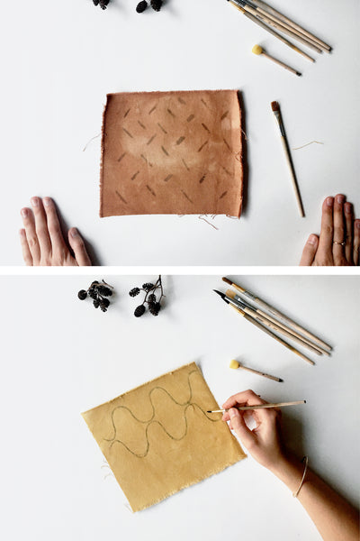
Take it slow
Especially when you're working with a heavyweight fabric, it takes a while for iron water to soak in and react with the dyes. You might see the color change after a few seconds, up to a minute later. Take it slow, let the iron reveal itself, and don't rush the process. It's easier to retouch some paler spots than to clean up spaces that weren't supposed to get dark in the first place.
I started with a thin brush and a minimal amount of water, and worked my way up from there.
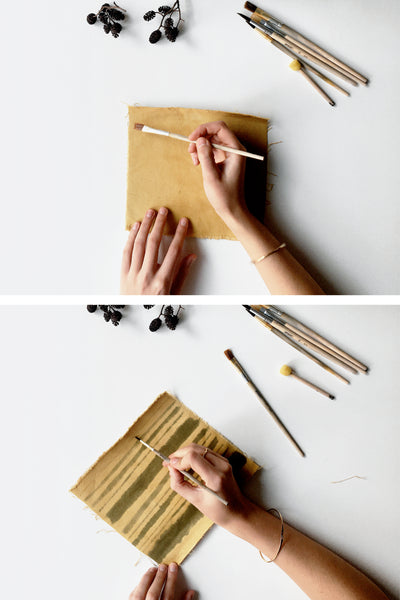
Have fun with a single brush
Even with just one single brush, the possibilities are endless. Geometric patterns, repetitive forms, random shapes, lines, diagonals, curves, circles, spots. Enjoy the process.
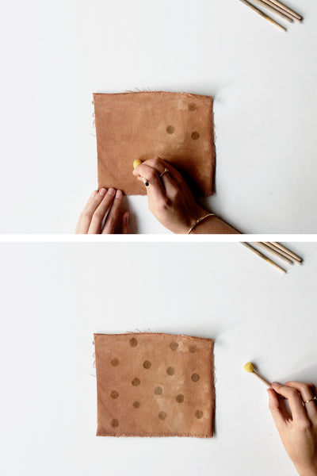
Or test different brushes
Test different brushes to make more intricate patterns. Even something as simple as straight lines gets interesting when you alter the widths. I made some very thick lines on one swatch that I later partially discharged to make the pattern even more interesting.
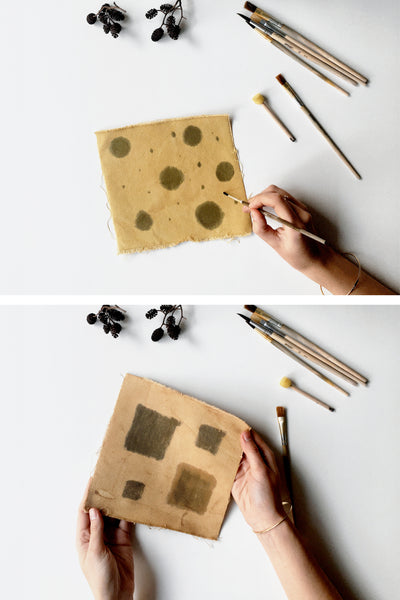
Use a sponge
Nothing is easier than making round spots with a round sponge brush. One swatch took just a few seconds and I love the polka-dot style. It gave me an idea to try rubber blocks next time. I still have my carved rubber stamps of lavender, berries, and ferns that I want to try with this technique. Once I start experimenting, the inspiration starts flowing.
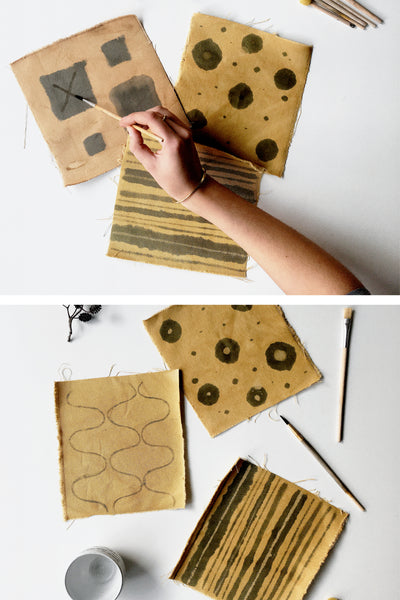
Try going big
For the last few pieces of fabric, I made big-surface patterns, which I later discharged with white vinegar solution. I like how they look before discharging too. Combining different brushes and different techniques is a nice way to get even more unique patterns.
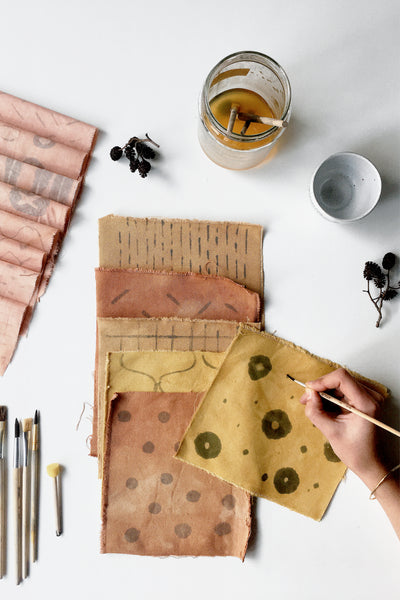
Discharging iron with acid
As mentioned, I used white vinegar diluted with tap water to make a discharge solution. I painted over iron-water patterns to break the bond between the dye and the iron, and reverse the reaction. That helped me create negative-space patterns.
It's also important to mention that this is a prime example of white vinegar not being a fixative in plant dyeing. White vinegar (and other acids) don't fix the colors. Instead, they break the bond between the mordant (metal salt) and the fabric, causing the color to bleach. The only process that uses an acidic environment to its advantage is dyeing with acid dyes.
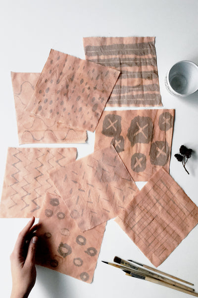
Other modifiers to test
I hope you had fun following this simple tutorial. If you have an appetite for more, I would suggest testing the influence of low and high pH on pH-sensitive dyes, such as mahonia berries, red cabbage, or black hollyhock. None of these are lightfast, so please don't plan any time-consuming projects involving them. But they are great dyes to test with kids and see how the pH changes them.
The general rule is that high pH shifts the color towards warmer shades (pinks and reds), and low pH shifts the color towards cooler tones (greens and blues). As I said, not all dyes are pH-sensitive, so test the ones you have at hand and be open to surprises.